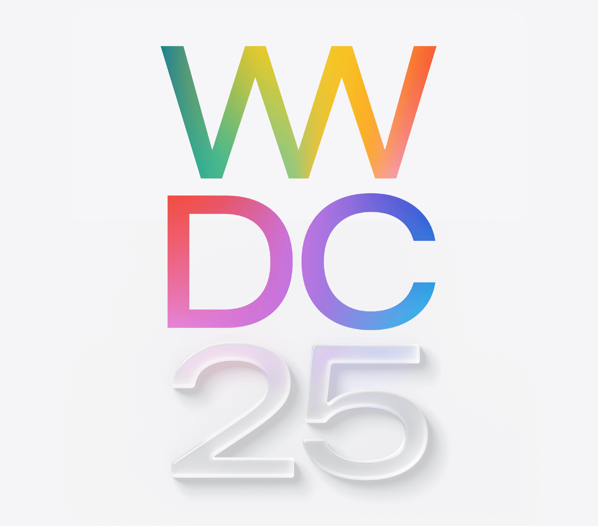

WWDC25 행사 예고 등 한 주간의 애플 소식들 25-03-30
WWDC25 개최일 공개
 WWDC25 (Apple)
Apple은 미국시각 기준 2025년 6월 9일 WWDC(world wide developer conferences, 세계 개발자 회의) 개최를 공식적으로 알려왔다. WWDC는 이름처럼 개발자를 위한 다양한 기술적 발표가 있는 회의이며 첫날 키노트에서는 macOS 15나 iOS 19 등과 같은 소프트웨어 차기 버전 발표와 함께 일부 제품 발표도 겸하고 있어서 비개발자들에게도 유용한 정보가 있을 수도 있다.
이번 행사는 6월 9일 부터 13일까지 온라인 위주로 진행되지만 첫 날에는 Apple Park에서 오프라인 이벤트가 열릴 예정이라고 한다.
현재로썬 차세대 OS 소프트웨어 라인업을 제외하곤 어떤 제품이 발표될 지에 대한 예측은 부족한 듯하다. 그저 행사 로고 등을 통해 iOS 19 등의 디자인 변경 컨셉에 대한 추측은 가능한 것 같다.
소프트웨어 관련 소식들
개발자 베타 릴리즈:
- macOS 15.4 RC, RC 2
- iOS 18.4 RC, RC 2
- iPadOS 18.4 RC, RC 2
- iPadOS 17.7.6 RC
- visionOS 2.4 RC
- watchOS 11.4 RC
- tvOS 18.4 RC
- Xcode 16.3 RC, RC 2
일부 OS 및 소프트웨어의 두 번째 RC가 거의 바로 나왔다는 점에서 첫 RC에 크리티컬한 버그가 있었을 가능성을 추측해 볼 수 있다. RC도 완벽하진 않다는 말이다.
기타 소프트웨어 업데이트:
- Final Cut Pro for Mac 11.1
- swiftly 1.0 (참고로 swiftly는 Swift version manager다)
펌웨어 업데이트: Powerbeats Pro 2 Firmware 7B30
iOS 18.4 RC 등에서도 여전히 EU에서는 iPhone Mirroring, SharePlay Screen Sharing 등의 기능을 사용하지 못 한다고 한다. 이는 EU의 규제에 의해 제공하지 못 하는 것으로 알려졌다.
Apple은 건강(Health) 앱을 새로 개발 중인 것으로 보인다. Apple Intelligence를 접목한 완전히 새로운 형태를 목표로 하는 모양이다. 이르면 iOS 19.4에서 탑재될 가능성이 있는 모양이다.
일반적인 소식들
AirPods Pro 2의 Hearing Aid가 더 많은 국가로 확장된다. 추가 지원 대상 국가로 호주, 브라질, 사우디 아라비아, 콜롬비아, 말레이시아 등이 알려졌다. 해당 기능은 청력 손실 감지 및 실제 손실 측정 시 거기에 맞게 음량 등을 대응하도록 하는 기능이다.
Apple Card Savings Account(저축계좌)의 금리가 또 인하된다. 기존 3.9%에서 3.75%로 15bp 내려간다. 그래도 한국의 예금금리 보다는 높긴 하다.
Mac 루머들: 2026년 MacBook Pro의 대규모 업데이트를 앞두고 M5 MacBook Pro가 올해 말 리프레시 될 것 같다.
iPhone 루머들: 폴더블 iPhone은 2000 달러 근방의 가격과 함께 펼치면 iPad와 비슷한 4:3 크기가 될 것 같다. 기타 소형 iPhone 모델에 관한 계획은 아직 없는 모양이다.
iPad 루머들: Apple은 올해 말 생산을 목표로 M5 iPad Pro를 개발 중인 것으로 보인다. M6가 탑재될 iPad Pro에는 새로운 모뎀 칩이 탑재될 가능성이 있는 모양이다.
Apple Watch 루머들: 혈압 측정 기능 개발과 관련하여 내부 테스트 도중 걸림돌이 계속 발견되고 있는 모양이다. Apple Watch Ultra 3에는 5G 및 위성 문자 기능이 제공될 것 같다.
AAPL
Tim Cook이 DeepSeek를 칭찬했다고 한다. 중국개발포험에 참석하기 위해 중국을 방문한 중의 발언인 것 같다. 다만 개인정보가 노출되거나 민감한 보안 결함이 계속되고 있고 여러 국가에서 DeepSeek를 금지하는 와중이라 중국 만을 위한 일종의 립 서비스가 아닐까 추측된다.
드디어 인도네시아에서 iPhone 16 시리즈가 4월 11일 출시된다. 그동안 Apple의 투자를 요구하며 출시를 방해하던 인도네시아 정부와의 협상이 정말 마무리 되어가고 있는 모양이다.
Apple은 중국 앱 개발에 400만 달러를 기부했다. 여전히 중국 시장에 공을 들이는 Apple이다. 이 밖에도 Tim Cook은 DeepSeek 개발자들의 본거지인 항저우 등을 방문했다고 한다.
미국 유타 주에서 App Store 책임법을 통과시켰다. 이 법은 연령 확인의 책임을 개별 앱이 아닌 App Store 등에 요구하는 법이다. 다만 이 변화가 전세계를 대상으로 확대될 지는 미지수다.
EU는 Apple의 DMA 위반에 따른 벌금을 최소화 했다. 그런데 이 이유 중 하나가 트럼프의 관세 보복을 우려하는 것 같다는 추측이 있다. 트럼프의 관세가 이런 데서 장점을 보여줄 줄은 몰랐다.